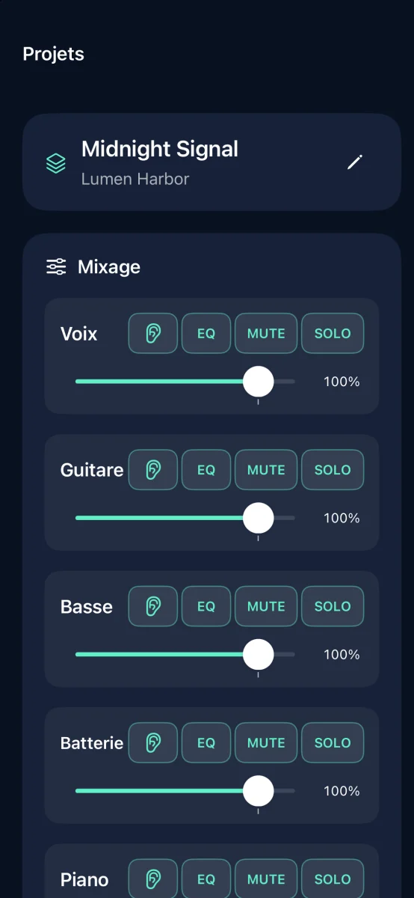
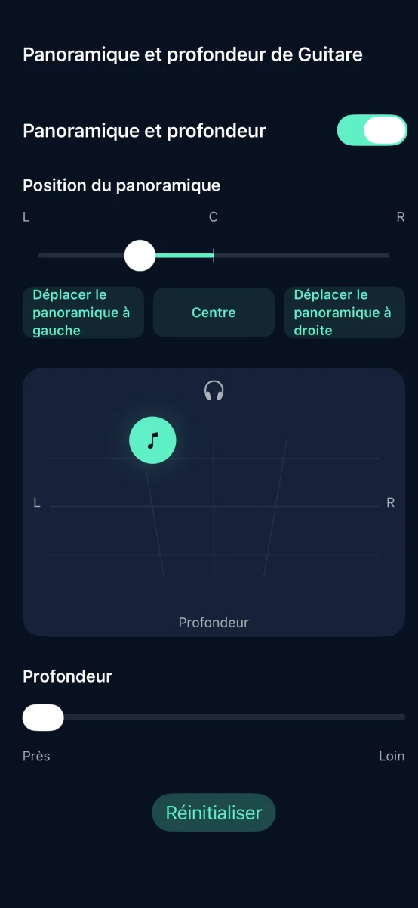
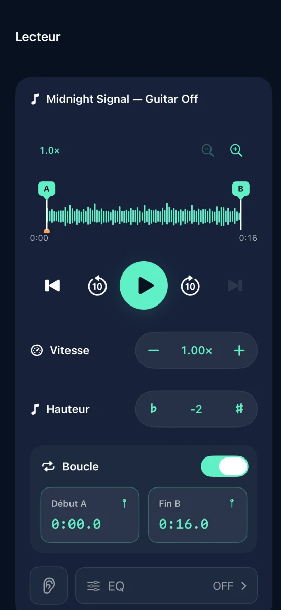

Séparation de pistes et pratique musicale sur iPhone

Crée ton accompagnement à partir d’un morceau
Sépare le morceau en six pistes et coupe celle que tu joues.
Bientôt sur l’App Store

Fonctionnalités



Séparation de pistes et pratique musicale sur iPhone
La séparation des pistes s’effectue sur votre appareil. Aucun compte n’est requis.
Réglez le volume, le mode muet, le solo, l’égalisation, le panoramique et la profondeur de chaque piste. Exportez au format M4A, MP3 ou WAV.
Essaie gratuitement trois séparations réussies. Un achat unique débloque les séparations illimitées. Sans abonnement.
Les morceaux en streaming et les fichiers audio protégés par DRM ne peuvent pas être importés. Utilisez des fichiers audio pour lesquels vous disposez des droits nécessaires.
Aide et assistance ↗